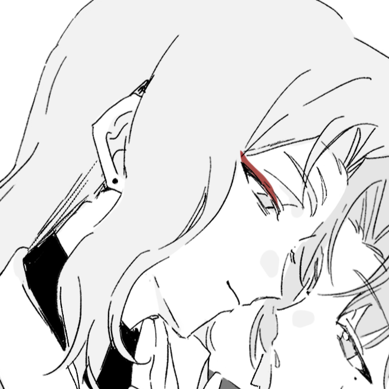
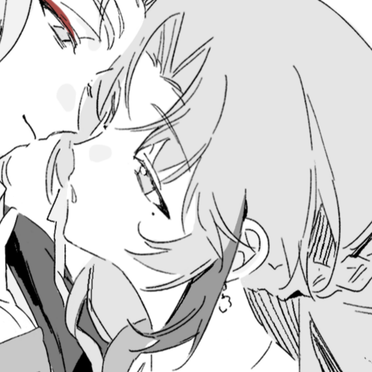
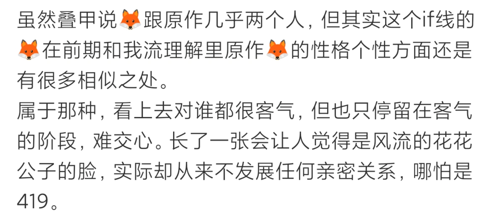
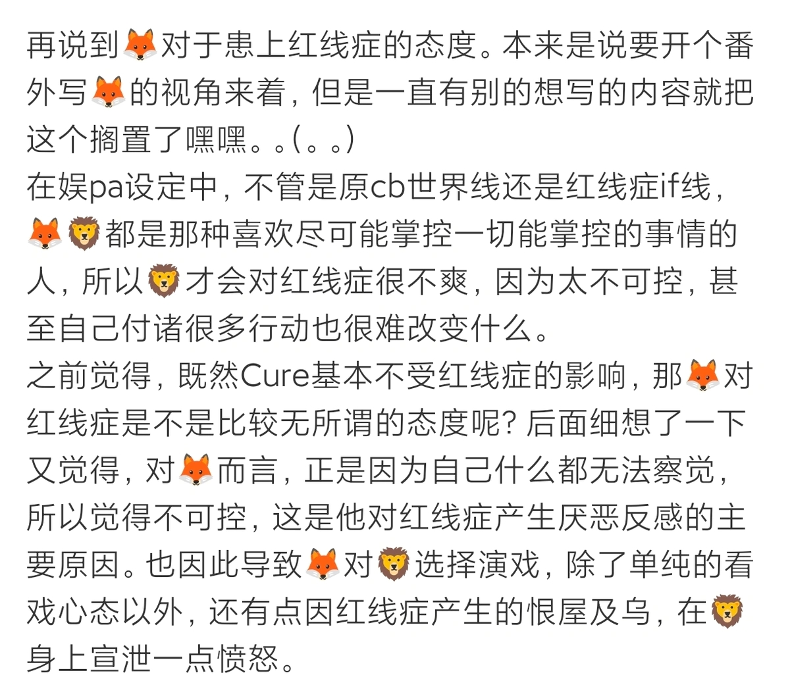
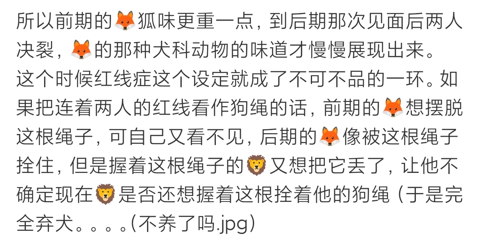
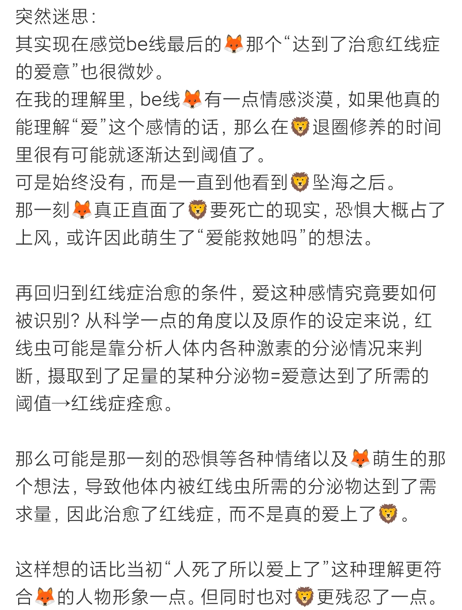

WORLD 004 / STORY
BE线
人物介绍

西木子
外表永远得体疏离，待人接物周到有分寸，却始终与人保持距离。内在极度理性务实，有极强的秩序感和边界感，像狐狸般敏锐谨慎，能迅速看透很多事情的本质，却看破不说破
他习惯把自己放在观察者的位置，用理性筑起围墙，害怕失控和主动向他人承认自己想要什么。
典型的回避型人格。不擅长面对自己的内心，遇到无法判断的情感的第一反应是逃避。
在得知自己是与离颜配对的Cure时,他开始好奇，像对方这样的人乞求他人的爱时会是什么样子。
于是他主动示好，以自己为诱饵，努力做一个合格的“交易”伙伴，观察了解对方的喜恶，一同参加旅行综艺……等待对方一步步上钩。
但再优秀的猎人也有失误的一天。在感受到对方的感情后，他逐渐失去了对自己的真实想法的判断，对现在的自己感到陌生，便想选择从中抽身。
面对离颜后来的质问时，他无法再欺骗对方，但也做不到直面自己模糊不清的内心。
他默默地关注离颜后来的生活，在久违地收到对方的见面邀约时，他既开心又担心，但是没有任何犹豫便答应下来。
可令他没想到的是，这竟是自己和对方的最后一面。他只能看着海水将对方吞噬而他的爱意却在离颜坠海后，够到了足以治愈红线症的阈值。
此刻，一切的爱都显得多余。

离颜
总是明媚张扬，自信果决，像狮子般强大耀眼，习惯站在前面保护他人。
她享受挑战和征服，想要握牢自己所能拥有的一切。骨子里有股不服输的韧劲，从不畏惧直面困境。
在感情中十分直球，喜欢主动表达和争取感情。但也有自己的底线，不喜欢纠缠不清，也不愿乞求他人的怜悯。
在和对方见面后，同对方达成了交易关系——对方提供血液，而自己则需要扮演对方的好友，挡掉一些“麻烦”。
西木子给出的条件简单，做事也爽快，是个很好的合作伙伴。
她也努力制造相处机会，以期对方能慢慢对自己产生感情。
当她以为，综艺的录制让两人的感情有所升温时，对方却在结束后断崖式疏远自己。
而后种种可疑的行径让她不得不回顾二人往日的相处，而她最终也选择直白地质问对方真正的目的，自己先前的一切怀疑都被逐一证实。
她恨对方的欺骗，不再执着于获得对方的爱，也不再接受对方的各种真假不明的好意。
她在剩下的日子里按照自己的想法，只为自己而活，逐渐不再畏惧死亡。
她不想被红线症左右自己的生死，最后放下了一切，主动终结了自己的一生，在自己挚爱的大海中长眠。
“我不想再恨你，恨意会让我们之间依旧被某个情感捆缚。我只想和你不再有任何关系。“
主线剧情
杂谈 & 代餐

杂谈01 ⑴

杂谈01 ⑵

杂谈01 ⑶

杂谈02